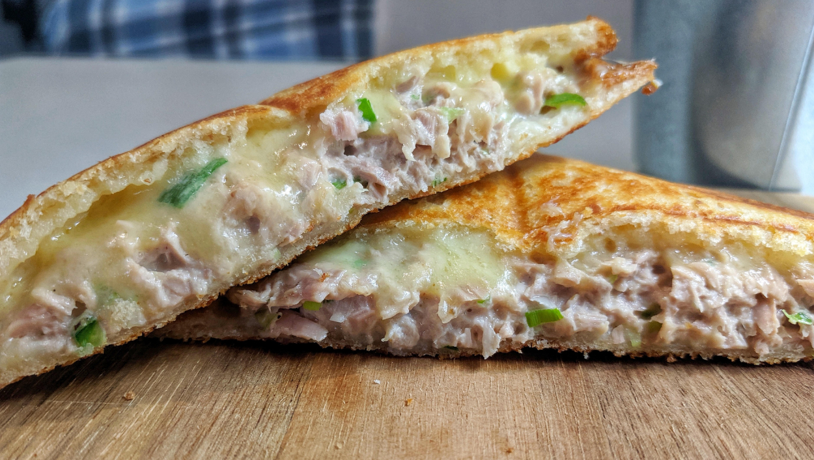

Tuna and Cheese Jaffle

Description
Warning: Requires a Jaffle-maker.
Ingredients:
- Bread
- Tuna
- Cheese
- Lemon
- Pepper
Steps:
- Open a can of tuna.
- Lay out the tuna on bread.
- Apply pepper to the tuna.
- Squeeze the lemon on the tuna as per your taste.
- Place cheese on top.
- Place another slice of bread to make it a sandwich.
- Cook in your jaffle-maker and enjoy.